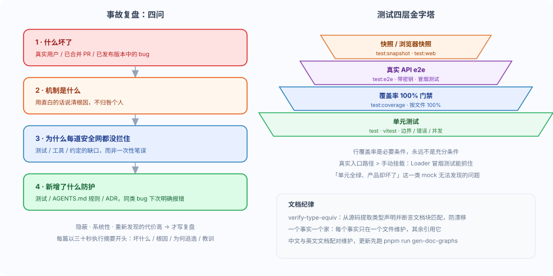

DeeSeek Harness 事故复盘与工程文化
dsh 仓库把每一次「不该出现却出现了」的 bug 都写成事故复盘（postmortem），并留下测试、文档与规则层面的防护。
理解这套复盘文化与测试纪律，你就能在 runoob 项目里活用它：不只是会用 dsh，而是会像维护者一样思考。
一句话：一个 bug 的价值，不在于那行修复，而在于为什么流程放过了它，以及新增了什么防护让同类问题下次明确报错。
复盘文化：四问
事故复盘记录的是：一个 bug 出现在了不该出现的地方（真实用户、已合并的 PR、已发布的版本）。
值得关注的是为什么我们的流程放过了它，而不仅仅是那一行修复。
它是一份回顾性的失败记录，回答四个问题：
| 四问 | 要回答什么 |
|---|---|
| 什么坏了 | 用一个简短段落让忙碌的读者在三十秒内吸收要点 |
| 机制是什么 | 用直白的话说清根因，不归咎个人 |
| 为什么每道安全网都没拦住 | 找出测试、工具、约定的缺口，而非一次性笔误 |
| 新增了什么防护 | 测试、AGENTS.md 规则、ADR，让同类 bug 下次明确报错 |
不是所有 bug 都值得写复盘。
只有当 bug 同时满足三个条件时才写：隐蔽（机制不显而易见，细心的工程师也得费力重新推导）、系统性（逃逸原因是测试、工具、约定的缺口）、重新发现的代价高（消耗了真实调试时间，下次还会如此）。

四个真实案例
仓库目前有四篇事故复盘，每一篇都对应一类容易复发的工程失误。
下面逐个介绍，重点是「为什么逃逸」与「新增了什么防护」。
复盘 0001
ACP 服务器在连接时崩溃：export default 丢掉了插件的 inject。
什么坏了：编辑器（Zed）一连上，第一个
session/new就报cannot get property "agents" without inject。机制：插件多写了一个
export default apply，Loader 的unwrapExports取到了裸函数，把命名空间上的inject整个丢掉了。为什么安全网没拦住：178 个绿色单元测试 + 100% 行覆盖率都在，但所有测试都通过手动
ctx.plugin(...)挂载，绕过了真实 Loader 的加载路径。新增防护：删除 default export；增加无需 key 的真实 Loader 冒烟测试；规则「测试真实入口路径，行覆盖率不等于行为覆盖率」。
复盘 0002
文件系统快照工具被一个字面量 !!js 对象永久禁用。
什么坏了：七个文件系统场景调用了注册表里不存在的工具，返回
UNKNOWN_TOOL。机制：作者用
disabled: !!js ...想条件启用文件系统插件，但 Cordis 只在插件config内部对 JS 表达式求值；直接读disabled配置项时，它看到的是一个 truthy 对象。为什么安全网没拦住：快照刷新把「确定性回放」当成了「行为正确」——它证明了回归被稳定复现，却没证明文件系统工具真的注册了。
新增防护：改用显式文件系统 overlay；静态配置守卫拒绝 Loader 配置项元数据里的表达式节点；快照框架拒绝结构化
UNKNOWN_TOOL结果。
复盘 0003
Web agent 验收了替代服务器，而非承载其会话的 GUI。
什么坏了：agent 修改了 GUI 源码，却不知道当前会话对应哪个 URL、由哪个进程承载。
机制：它把裸 Vite 返回的 HTTP 200 当作成功（其实白屏），随后又去验收另一个端口上的替代
dsh web服务器，从未探测 3081 端口。为什么安全网没拦住：Web 组合没有向模型提供当前 GUI、规范 URL 或运行模式的身份信息；第一个回归测试还用「进程超时」冒充「快速失败」，产生误报。
新增防护：启动器发布规范环回 URL 与实际生产/开发模式（环境变量 + 提示词区段）；独立 Vite 服务模式在配置阶段拒绝启动；分层真实路径测试覆盖 CLI、提示词、运行时事实与浏览器 HMR。
复盘 0004
Landlock 部分强制执行通知导致子进程失败被误归类。
什么坏了：在较旧的 Landlock ABI 内核上，ripgrep 无匹配时以退出码 1 正常结束，却被呈现为
SANDBOX_UNAVAILABLE沙箱故障。机制：launcher 打印无害的
landlock-run: partial enforcement (older Landlock ABI)通知；harness 用不区分大小写的landlock-run:子串把通知与任意非零退出组合，误判为 runner 失败。为什么安全网没拦住：沙箱结果类型只能表达一组子字符串，无法表达「Landlock 失败必须退出码 125 + 一行致命诊断」；测试矩阵从不构造「通知后跟非零子进程退出」的组合。
新增防护：
RunnerFailureRule携带允许退出码、逐行致命签名与精确排除的信息性行；文件系统搜索改用ctx.subprocess跑打包的 ripgrep，不再经过沙箱化 bash。
四个案例放在一起看，能总结出一条共同经验：测试必须走真实入口路径。
手动挂载、mock 一切、把快照刷新当验收——都会让「单元全绿、产品却坏了」成为可能。
测试四层
仓库的测试策略是分层的，每层补上一层抓不到的盲区。
| 层级 | 命令 | 抓什么 |
|---|---|---|
| 单元测试 | pnpm run test | vitest 跑包内测试，优先边界、错误路径、事件顺序、并发竞态 |
| 覆盖率门禁 | pnpm run test:coverage | 按文件 100% 覆盖；未覆盖行往往是该删除的死代码 |
| 真实 API e2e | pnpm run test:e2e | 带密钥调用真实提供方 API；缺密钥自动跳过，keyless CI 保持绿色 |
| 快照 | pnpm run test:snapshot / test:web | 无密钥预期输出覆盖对外行为；浏览器快照用 Chromium 回放比较 |
仓库是 DeepSeek 自己的，所以有一条特别原则：推理在这里很便宜，不要吝惜真实 API 测试。
无密钥测试只能证明底层通路；只有带密钥运行才能证明 agent 能对接真实模型正常工作。
价值最高的是冒烟测试：启动真实示例、发送一条提示词、检查外部世界。
它们能捕获「单元测试全绿、产品却坏了」这一类 mock 无法发现的问题。
行覆盖率是必要条件，永远不是充分条件。
它证明行被执行过，不证明功能按交付预期工作。
0001 案例里 100% 覆盖率仍然放过了两个集成 bug，就是最好的注脚。
另一个原则是验证外部世界，而非自我报告。
e2e 断言应重新运行命令或从外部重新读取文件；对 agent 自身输出做关键词探测会让作弊的 agent 通过。
断言未修改的文件应逐字节一致。
文档纪律：一个事实一个家
仓库的文档不是写完就完，而是有机制防止「文档与源码漂移」。
verify-type-equiv是一道门禁：它用 TypeScript 解析器从源码提取类型声明的符号及其附带的 JSDoc，断言文档代码块同时匹配两者。
当你改动一个已记录的类型声明或其 JSDoc 时，门禁会失败，直到你更新粘贴内容。
这保证文档里的类型定义与源码永远一致，不会出现「文档抄的是旧版」。
另一条纪律是一个事实一个家：每个事实只在一个文件里维护，其余文件引用它。
例如工具 schema 的「真源」在adding-a-tool.md，其它页面引用而不复制。
中文与英文文档通过双语配对维护，更新时先跑pnpm run gen-doc-graphs更新英文，再更新中文并验证配对。
对你自己的项目同样适用：把「唯一事实」放在一个地方，别让同一个配置散落在三份文档里。
动手示例：写一段三十秒执行摘要
复盘每一篇都以一段执行摘要开头，让忙碌的读者三十秒内吸收要点。
试着复盘一次你在 runoob 项目里遇到的 Agent 故障，按下面模板写：
# 复盘 0005：runoob 演示环境的工具黑名单没有生效 ## 摘要 demo 环境里模型仍能调用被禁用的 fs_write，直接写入了工作区。 根因是黑名单插件用 `tools/pre-execute` 返回了 `next()`， 而真正负责拦截的守卫注册在插件卸载之后——加载顺序错了。 逃逸原因是加载顺序没有测试覆盖，`cordis.yml` 只测了「能起来」。 新增防护：给黑名单插件补一条「顺序敏感」的装配测试， 并在 AGENTS.md 记录「pre-execute 与 guard 的注册顺序」规则。
三十秒摘要的公式：坏什么 → 用直白的话说根因 → 为什么逃逸 → 可长期沿用的教训。
系列结语
到这里，DeepSeek Harness 入门教程的全部 28 篇就结束了。
回头看看这条路：从第 1 篇认识 dsh 的四大护栏，到学会安装、用 Web UI、用 Python SDK；从写第一个插件，到理解插件生命周期、服务与作用域、事件系统；从用三角色模式设计能力、接入任意 LLM，到打包发布；最后这五篇，补上了安全与工程文化这最后一块拼图。
你真正带走的，不只是 API 的用法，而是一套思考方式：
模型负责聪明，Harness 负责可靠。约束不是限制，而是让 Agent 可预测、可审计、可回放的基石。
一切皆插件。把策略放在扩展点上，而不是写进循环里，系统才能演进而不失控。
真实入口路径胜过一切 mock。覆盖率、快照、冒烟测试各司其职，共同防止「全绿却坏了」。
故障不可怕，可怕的是不知道为什么。复盘文化把一次事故变成一套防护。
其他扩展
点我分享笔记
<p style="font-size:14px;">笔记需要是本篇文章的内容扩展！</p><br> <p style="font-size:12px;"><a href="../tougao.html" target="_blank">文章投稿，可点击这里</a></p> <p style="font-size:14px;"><a href="../w3cnote/runoob-user-test-intro.html" target="_blank">注册邀请码获取方式</a></p> <h3 class="text-muted"><i class="fa fa-info-circle" aria-hidden="true"></i> 分享笔记前必须<a href=";.html" class="runoob-pop">登录</a>！</h3> <p><a href="../w3cnote/runoob-user-test-intro.html" target="_blank">注册邀请码获取方式</a></p>